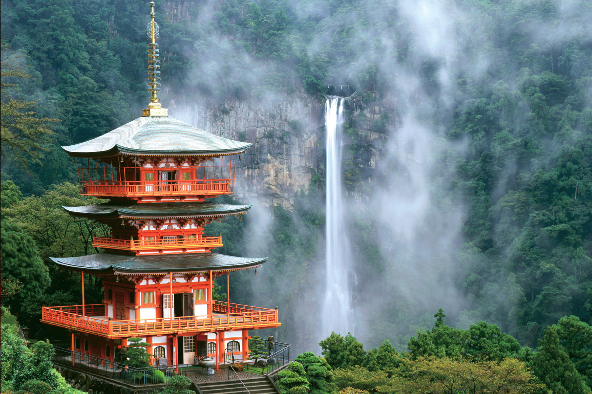

En japonés, Nihon o Nippon es el nombre del país, que significa “Tierra del Sol Naciente”. Se creyó que Japón era el primer país en ver el sol levantarse en el Oriente por la mañana. De ahí viene el conocido mote.
El país nipón sólo sufre unos 2 homicidios relacionados con armas de fuego al año. Aunque no te aconsejamos que lo pruebes, puedes dejar tu cartera en el suelo de la transitadísima estación de Shinjuku y volver a por ella media hora más tarde. ¡Allí seguirá! Durante nuestra visita al país no nos sentimos intimidados en ningún momento. Otro ejemplo de lo improbables que son los hurtos en Japón, es que en todas las ciudades dejan las bicicletas sin atar.
Las jidohanbaiki o máquinas expendedoras son parte del paisaje urbano y rural de Japón. De hecho, aunque el concepto no es exclusivo de Japón, el turista se sorprende porque aquí son omnipresentes. De hecho, en Japón hay una máquina expendedora por cada 23 personas. Teniendo en cuenta que la población de Japón es de alrededor de unos 126 millones de personas.
Podría sorprenderte saber que uno de los países más limpios del mundo tiene tan pocos contenedores de basura en sus calles. Este es definitivamente uno de esos aspectos o cosas que no sabías de Japón. Los japoneses tienden a llevar sus desperdicios hasta encontrar un lugar donde puedan desecharlos de manera apropiada, lo que habla mucho de su conciencia ambiental y respeto por la comunidad.
La lucha de sumo no es solo un deporte, es una tradición con raíces profundas en la cultura japonesa. Está lleno de rituales y significados que van más allá del mero combate físico. Si alguna vez tienes la oportunidad de presenciar una lucha de sumo, notarás que es una experiencia que combina la fuerza, la destreza y una profunda reverencia por la tradición.
